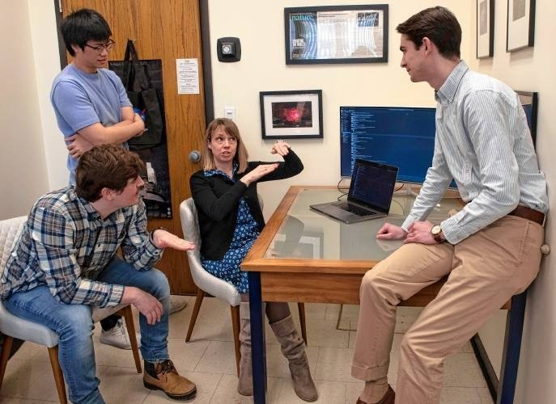
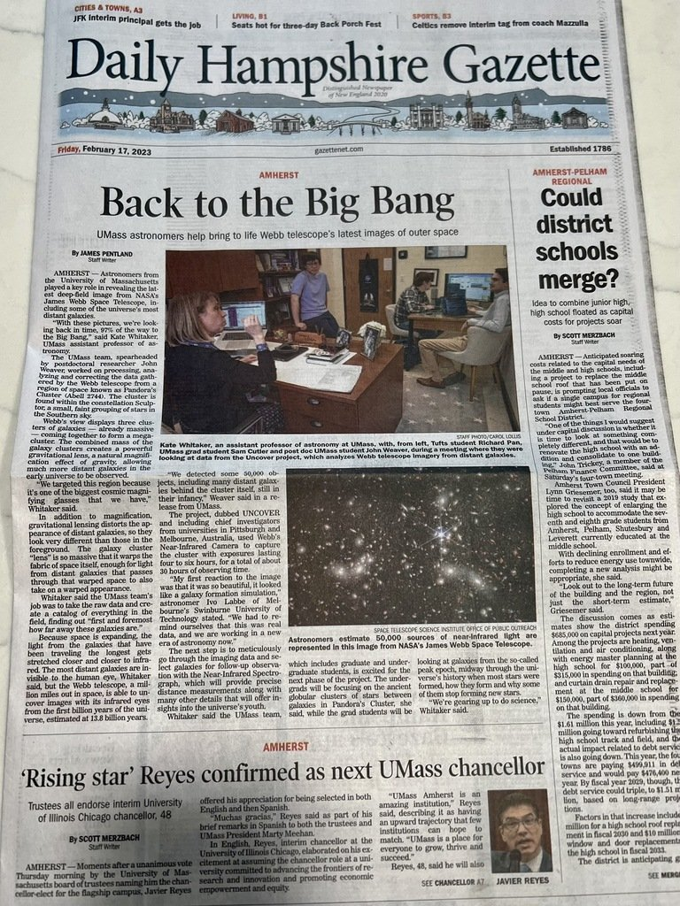
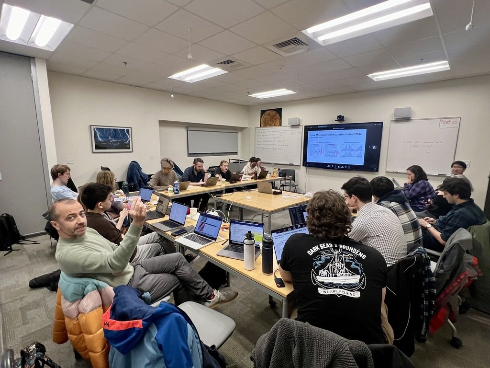
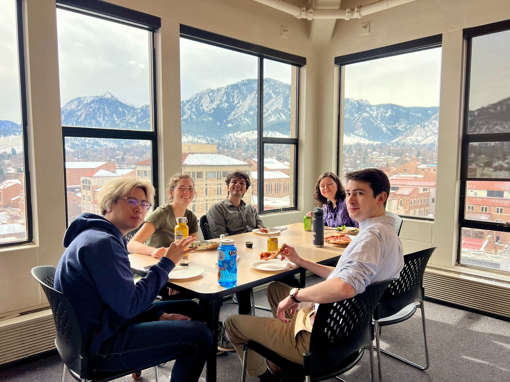
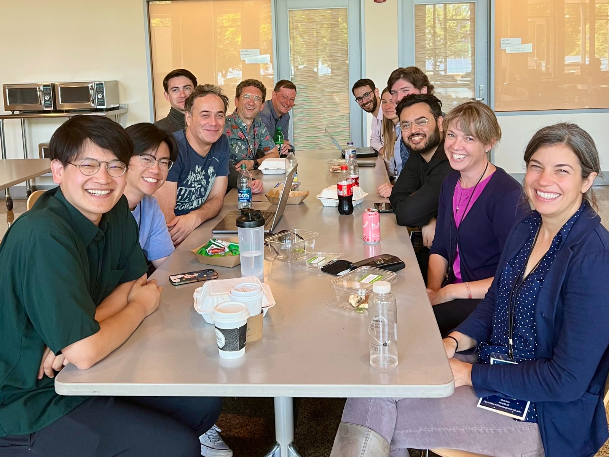
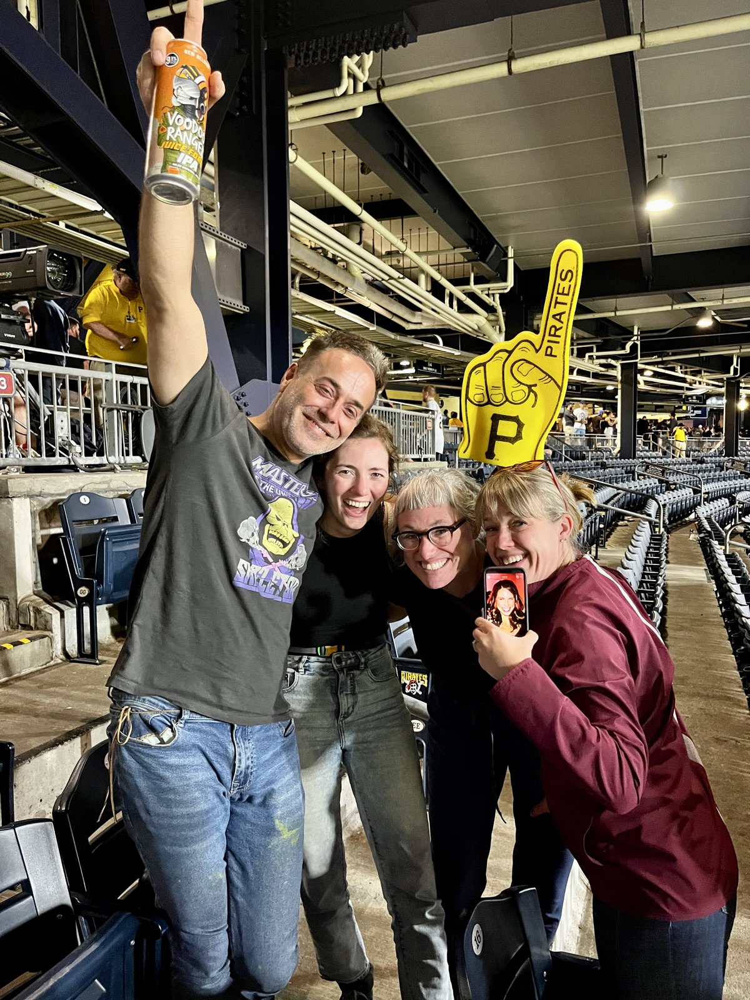
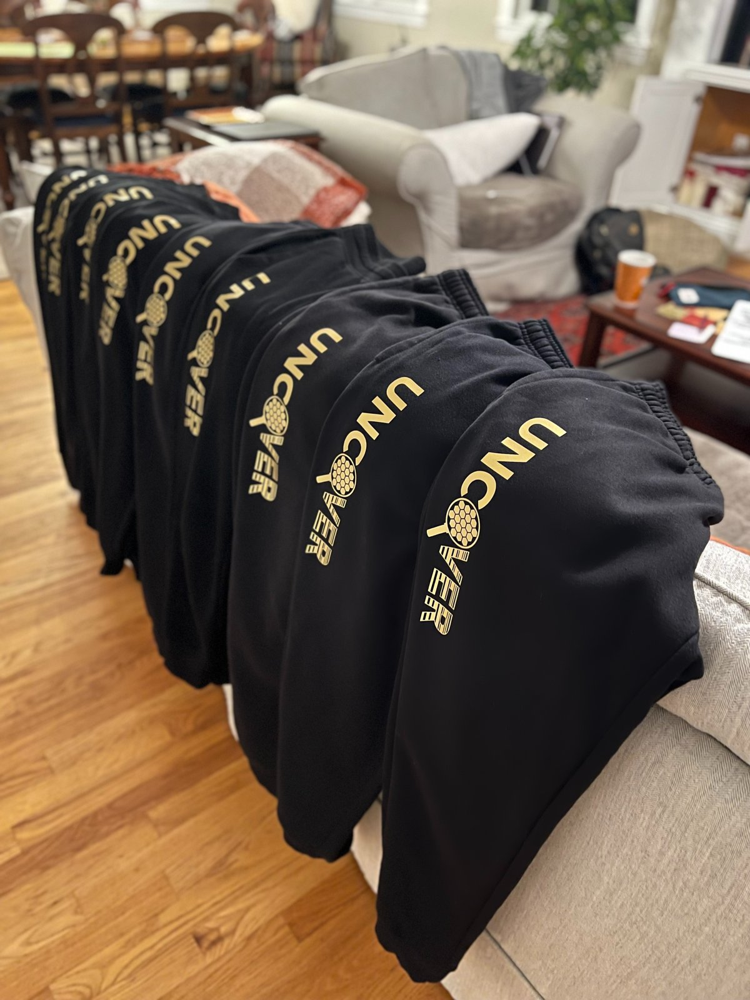
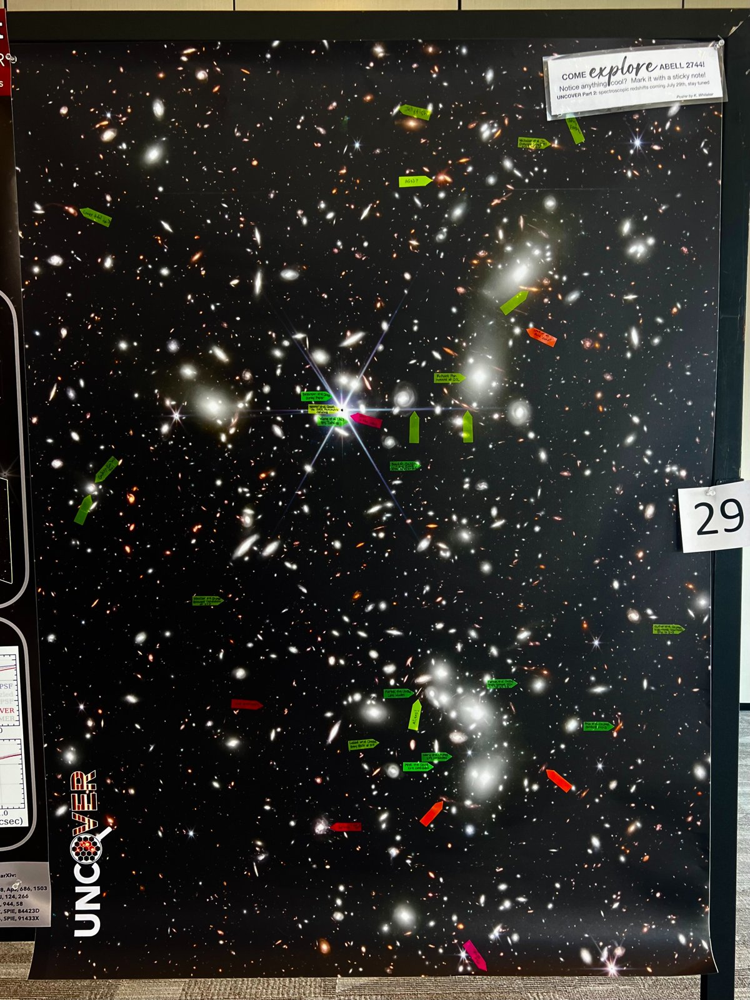
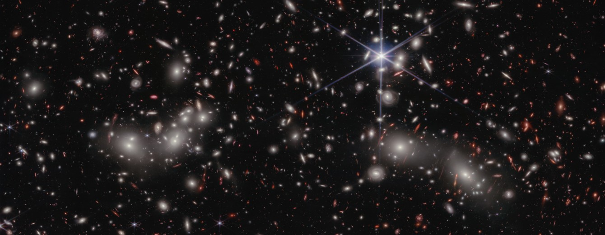

JWST UNCOVER Collaboration Receives the 2027 Berkeley Prize








Left to right: releasing the first UNCOVER images from my office in early 2023, and the story on the front page of the Daily Hampshire Gazette (photos: Daily Hampshire Gazette); team meetings in Boulder, CO, and Pittsburgh, PA, including a night out at a Pirates game; the UNCOVER sweatpants we designed ourselves; and our poster at the First Light conference at MIT.
September 28, 2026 — I am thrilled to share that the JWST UNCOVER collaboration has been selected to receive the 2027 Lancelot M. Berkeley–New York Community Trust Prize for Meritorious Work in Astronomy from the American Astronomical Society. UNCOVER is a Cycle 1 JWST Treasury program that uses the gravitational lensing of the massive galaxy cluster Abell 2744 (Pandora’s Cluster) to magnify some of the faintest and most distant galaxies in the universe. The prize recognizes three UNCOVER papers in the Astrophysical Journal describing the survey design, its imaging and spectroscopic data, and our discovery that many of the compact “little red dots” in the early universe are reddened, actively accreting supermassive black holes.

JWST imaging of Abell 2744 from the UNCOVER survey. Credit: NASA, ESA, CSA, I. Labbé (Swinburne University of Technology), R. Bezanson (University of Pittsburgh), A. Pagan (STScI), and the UNCOVER team.
The UNCOVER imaging working group was based right here at UMass, which makes this recognition especially meaningful for our department. I led that effort together with John Weaver (now a Brinson Prize Fellow at MIT) and my former PhD student Sam Cutler. Team awards like this are rare in astronomy, and I am so proud to share it with such a talented and generous group of collaborators. The team will deliver the closing plenary lecture at the AAS winter meeting in Salt Lake City in January 2027.
Related UMass Article: JWST UNCOVER Collaboration Including CNS Astronomers and Alumni to Receive Berkeley Prize